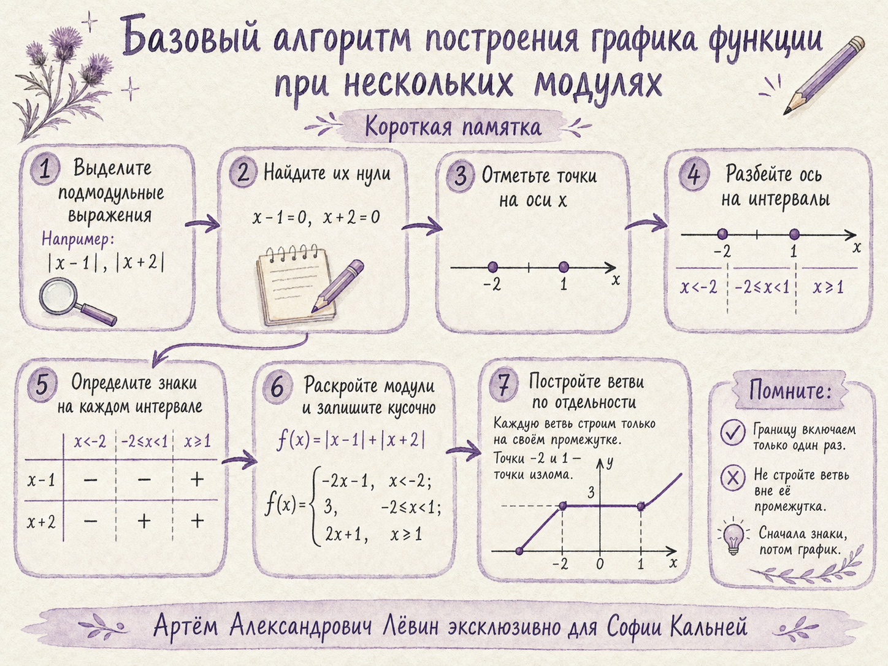

Определение модуля
Ключевой вопрос перед раскрытием модуля: где подмодульное выражение положительно, отрицательно или равно нулю?
Интерактивное пособие · ОГЭ · 14 августа 2026
Кусочные функции, множество значений, несколько модулей, сохранение ОДЗ после сокращения и чтение гиперболы с выколотыми точками.
Откройте плакат для быстрого повторения ключевого алгоритма и связей между ветвями графика.

Шаг 1
Сначала выясняем знак подмодульного выражения, затем строим только допустимую часть каждой ветви.
Ключевой вопрос перед раскрытием модуля: где подмодульное выражение положительно, отрицательно или равно нулю?
Подмодульное выражение — x. Его нуль: x = 0.
Слева от нуля x отрицателен, справа — неотрицателен.
Шаг 2
Значение y входит в множество значений, если горизонтальная прямая этого уровня пересекает график хотя бы один раз.
Выбранное значение y достигается.
Такого значения функции нет.
Для вершина имеет ординату 2, поэтому:
Число 2 включается, потому что вершина графика существует.
| Функция | Вершина | Множество значений |
|---|---|---|
| (b; a) | (−∞; a] | |
| (b; a) | [a; +∞) |
Шаг 3
Каждый модуль добавляет свои потенциальные точки смены формулы.
x = −2 и x = 1.
(−∞; −2), [−2; 1), [1; +∞).
m = 3.
[3; +∞).
Нули подмодульного выражения: x = −2 и x = 2. Между ними выражение отрицательно, снаружи — положительно.
Для дискриминант равен −15. Старший коэффициент положителен, поэтому выражение положительно при всех действительных x.
Шаг 4
Сокращение меняет формулу, но не возвращает точки, запрещённые исходным знаменателем.
x = 1.
y = 0.
(−1; −1/2) и (3; −1/2).
В x = 1 значение функции неограниченно убывает при приближении к асимптоте. В x = −1 и x = 3 сокращённая формула дала бы конечное значение, но исходная функция там не определена.
Сначала определите знак A(x), только потом выбирайте A(x) или −A(x).
Следите за двойным отрицанием при −|A(x)|.
Формула действует только на своём промежутке.
Сокращение не расширяет ОДЗ.
Область определения — допустимые x; множество значений — достигаемые y.
Тренировочный блок
Все условия и числовые данные взяты из пособия к занятию.
Запишите функцию y = 3 − |x| в кусочном виде и найдите её множество значений.
Граница — x = 0. При x < 0 имеем |x| = −x, поэтому y = 3 + x. При x ≥ 0 имеем |x| = x, поэтому y = 3 − x.
Наибольшее значение достигается в вершине (0; 3), обе ветви идут вниз.
Запишите f(x) = |x − 2| в кусочном виде. Укажите точку смены формулы и множество значений.
Нуль x − 2 равен 2. При x < 2 выражение отрицательно, поэтому f(x) = 2 − x; при x ≥ 2 — f(x) = x − 2.
Минимум равен 0 и достигается при x = 2.
Для g(x) = |x − 1| + |x + 2| запишите кусочную формулу и укажите промежуток, на котором функция постоянна.
Границы: −2 и 1. Слева получаем −2x − 1, между границами — 3, справа — 2x + 1.
Запишите h(x) = |2x + 4| − 1 в кусочном виде. Укажите точку смены формулы и множество значений.
2x + 4 = 0 при x = −2. Слева модуль меняет знак: h(x) = −(2x + 4) − 1 = −2x − 5. Справа h(x) = 2x + 3.
В вершине x = −2 функция равна −1 — это минимум.
Для p(x) = |x² − 4| запишите кусочную формулу и укажите все точки смены формулы.
x² − 4 = 0 при x = −2 и x = 2. Снаружи интервала [−2; 2] выражение неотрицательно, внутри — отрицательно.
F(x) = |x − 4| + |x + 1|. Найдите m, при котором графики y = F(x) и y = m имеют бесконечно много общих точек.
Границы: x = −1 и x = 4. На промежутке [−1; 4] имеем F(x) = (4 − x) + (x + 1) = 5. Значит, график содержит горизонтальный отрезок y = 5.
Упростите r(x) = (4 − |x|)/(x² − 4|x|) с обязательным сохранением ОДЗ. Укажите асимптоты и выколотые точки.
x² = |x|², поэтому знаменатель равен |x|(|x| − 4). Исходные запреты: |x| ≠ 0 и |x| ≠ 4, то есть x ≠ −4, 0, 4.
Числитель равен −(|x| − 4), поэтому после сокращения r(x) = −1/|x|, но исходные запреты сохраняются.
Решите |x − 3| + |x + 1| = 6.
Границы: −1 и 3. При x < −1 получаем 2 − 2x = 6, откуда x = −2 — подходит интервалу. На [−1; 3] левая часть равна 4, решений нет. При x > 3 получаем 2x − 2 = 6, откуда x = 4 — подходит интервалу.
Запишите G(x) = |x² − 1| в кусочном виде. Укажите точки смены формулы и найдите G(0).
Нули x² − 1: −1 и 1. Внутри (−1; 1) выражение отрицательно, снаружи — неотрицательно. При x = 0 получаем G(0) = |−1| = 1.
Для q(x) = (2 − |x − 1|)/((x − 1)² − 2|x − 1|) найдите ОДЗ, упрощённую и кусочную формулы, асимптоты, выколотые точки и множество значений.
ОДЗ: x ≠ −1, 1, 3. После сокращения q(x) = −1/|x − 1| с сохранением этих запретов. При x < 1 функция равна 1/(x − 1), при x > 1 — −1/(x − 1).
Асимптоты: x = 1 и y = 0. Выколы: (−1; −1/2) и (3; −1/2). Значение −1/2 достигается только в запрещённых точках, поэтому исключается.
Контроль
Вопросы проверяют только идеи, разобранные в пособии.
Результат: 0 из 5
Отметьте навыки, которые можете объяснить самостоятельно.